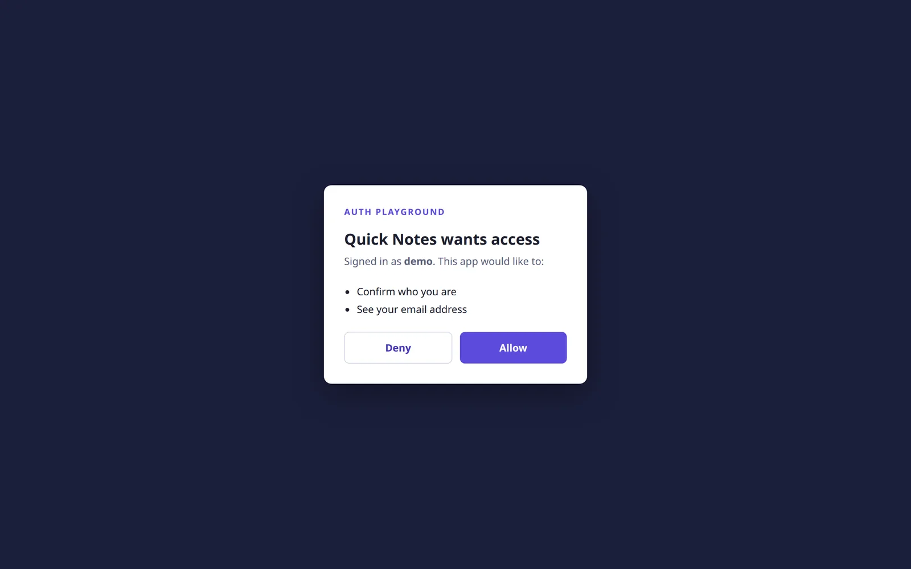
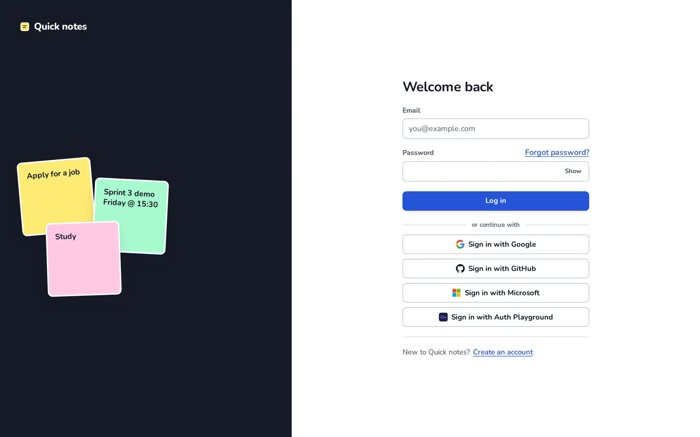
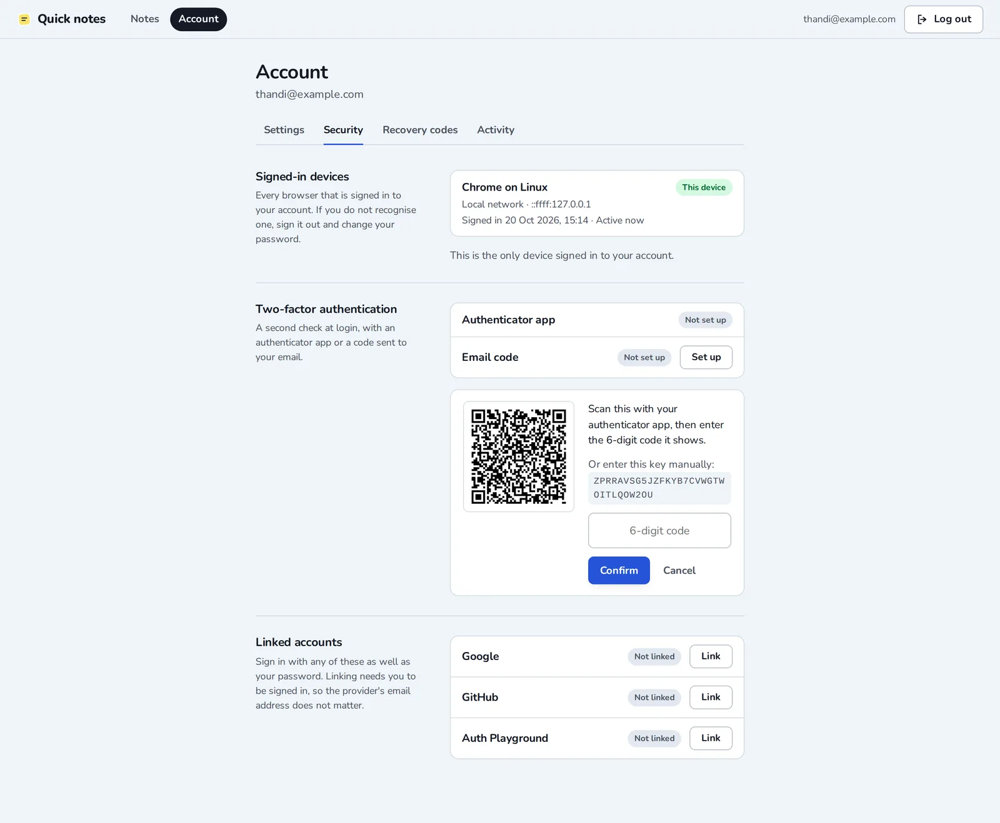
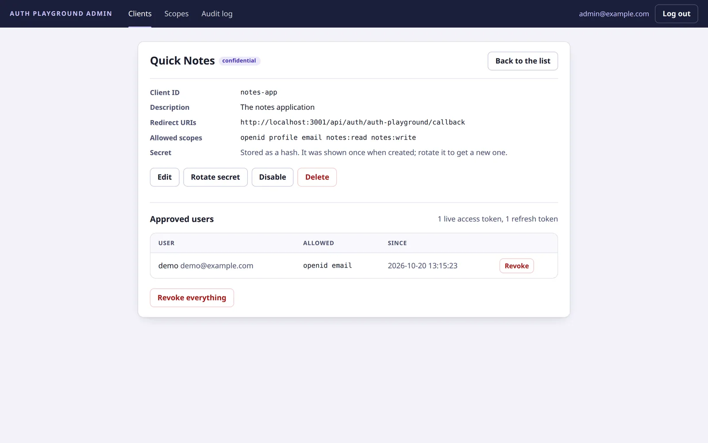
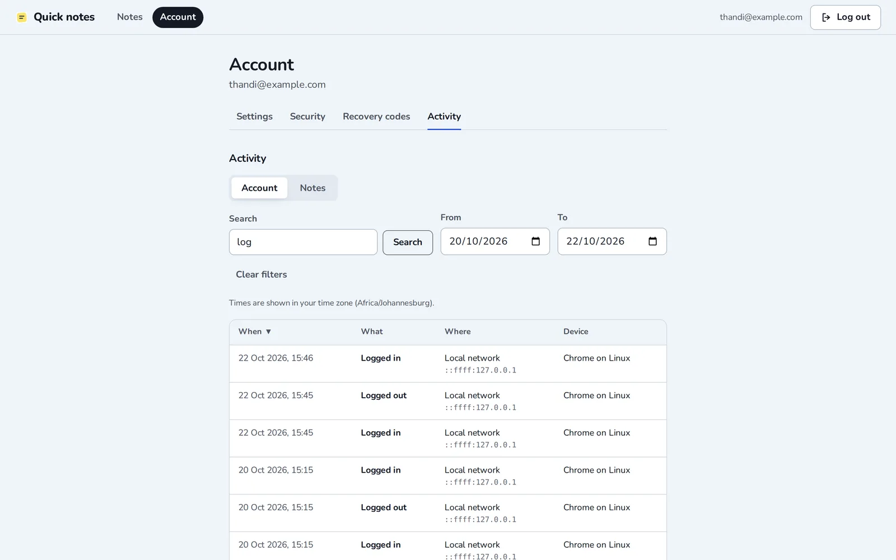

Auth Playground
An OAuth 2.0 / OpenID Connect sign-in server written from scratch for Spatialedge, plus Quick Notes, the secure notes app that signs in with it. Both were deployed for the client. In a team of six, I built the auth server core, the account security and the deployment.
Summary
Spatialedge set the brief: build a notes app with its own hand-written authentication, then an OAuth 2.0 / OpenID Connect server that the notes app and other applications can sign in with.
The server was built without an OAuth library; a JWT library was used only for signing and verifying tokens. Authorization codes are single-use, refresh tokens rotate on every use, and only RS256 signatures are accepted. The system ran as five apps (notes frontend, notes API, auth server, admin console, and a second demo client) deployed on a single server with HTTPS, monitoring, and automated deployment from CI.

My role
I wrote the largest share of the team's code and over 400 of the project's 900+ automated tests. I owned most of the auth server, the notes app's two-factor and account-security features, and the production deployment.
- Auth server core: authorization-code flow, consent, tokens, keys, discovery
- Token security: single-use codes, refresh-token rotation, RS256-only verification
- Admin console and its API
- Notes app sessions, two-step login, TOTP, email and recovery codes
- Single sign-on and account linking
- Production deployment, backups, monitoring wiring, CI contributions
- Database migration system
What I built
Auth server core
- The authorization-code flow with PKCE.
- The consent screen.
- The token, userinfo, revocation, signing-key (JWKS), and discovery endpoints.
- Consent withdrawal for users and admins.
Token security
- Single-use authorization codes; reusing a code revokes the tokens it issued.
- Refresh-token rotation, where reusing an old refresh token revokes its whole token family.
- Strict RS256-only verification of signed tokens.
Admin console
- A React app for managing OAuth clients, scopes, grants, and an audit log, with its own admin API.
Notes app authentication
- Sessions with configurable lifetimes and a two-step login.
- Authenticator-app (TOTP) codes implemented from scratch.
- Email codes and recovery codes.
- Email verification on signup and identity checks before disabling 2FA or deleting an account.
- User activity logging.
Single sign-on
- "Sign in with Auth Playground" for the notes app, scope-checked API access for third-party apps, and linking and unlinking SSO providers from the account page.
Extras
- Voice notes using the browser's speech recognition.
- A second demo client app that shows scope-limited access.
Deployment
- The production Docker Compose setup behind Caddy with automatic HTTPS.
- Backup and restore scripts.
- Wiring login and admin activity into the Prometheus / Grafana dashboards.
- Contributions to the GitLab CI pipeline: test reports and deploy keys.
Database migrations
- Replaced a single SQL init file with a proper migration system.
Interesting problems
The edge cases a library hides
Building OAuth without a library meant handling what a library would have handled for us: replayed authorization codes, stolen refresh tokens, and tokens signed with the wrong algorithm. Each one became a test before it became code.
A leaked token can't be used quietly
Refresh-token rotation treats reuse of an old token as theft and revokes the whole token family. The attacker and the real user both lose access, and the user signs in again, which makes the theft visible.
TOTP from the specification
I wrote the time-based one-time password algorithm from the specification rather than pulling in a package, and tested it against the known test vectors so that any authenticator app would agree with the server.
Stack
Media
Five screens from a local build of the system with a fictional user: the sign-in and consent screens, two-factor setup, and the admin console.

Email and password, or one of four providers. “Sign in with Auth Playground” starts the authorization-code flow with PKCE.
Scopes are explained in plain words. Allow issues a single-use authorization code, which the notes API exchanges for tokens.

The QR code and manual key come from my TOTP implementation, written from the specification. Any authenticator app can scan it.

The admin console: redirect URIs, allowed scopes, secret rotation, and every user who has granted access. Admins can revoke any grant.

Every sign-in, sign-out and security change is logged with its network and device. The log can be searched and filtered by date range, here narrowed to two days of sign-ins.